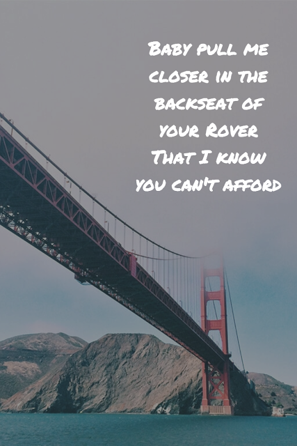
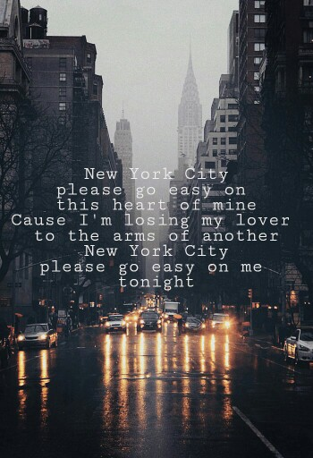
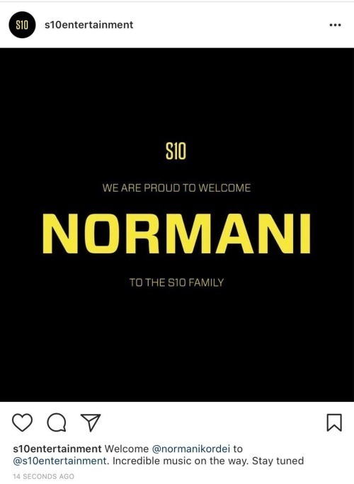
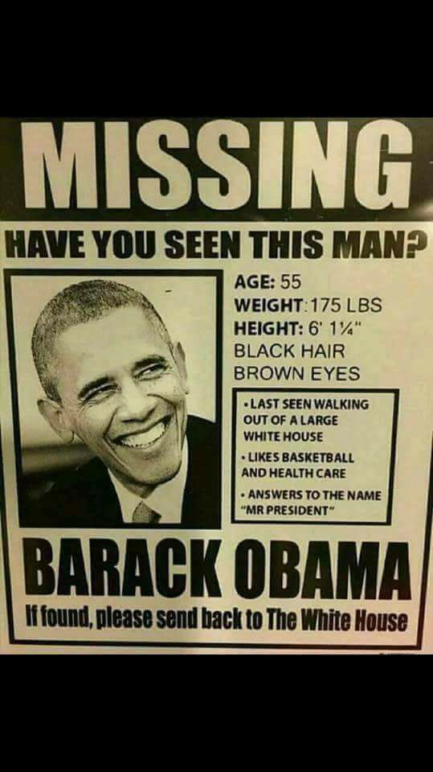
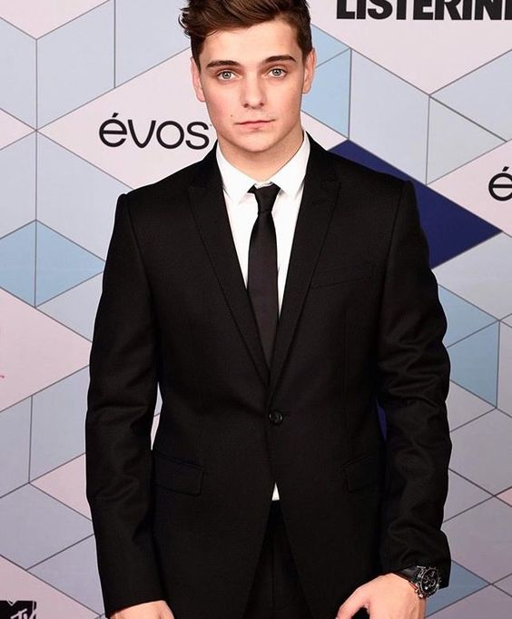
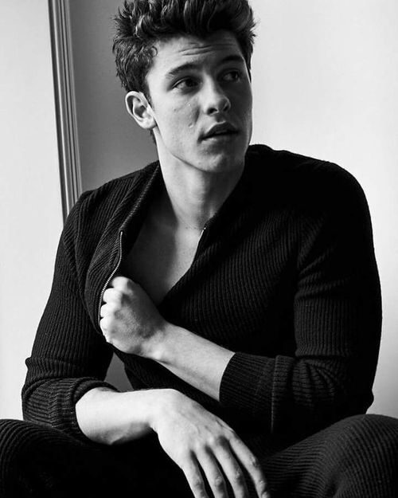
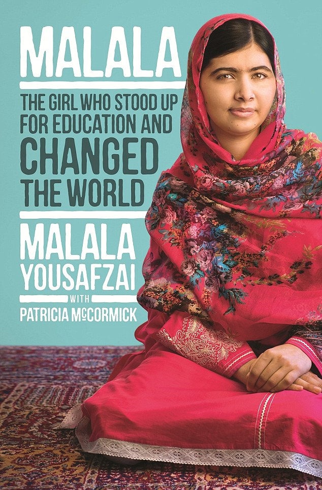

Halsey2 12.8k
Ashley Nicolette Frangipane, known professionally as Halsey, is an American singer-songwriter. Her stage name is a reference to the Halsey Street station of the New York City Subway in Brooklyn, and an anagram of her first name.
L
Lizbeth Basnet
#WeFuckingLoveHalsey

Closer by Chainsmockers2 12.8k
feat. Halsey
If someone asks me what the summer song of 2016 is, it's definitely the latest single by The Chainsmokers and Halsey.
I feel like every song I pick out has a heartbreaking element, but maybe that's because that's the true nature of the beast.
Love, in all of its forms, is beautiful.
C
CallMeLex
#Closer #Chainsmockers

New York City2 12.8k
by Chainsmockers
"New York City" is a song by American DJ duo The Chainsmokers. It features uncredited vocals from American singer Victoria Zaro. It is the fifth, and last, single from the duo's first EP Bouquet EP. The song peaked at number 25 on the Billboard Dance/Electronic Songs chart and number 80 on the 2016 Dance/Electronic Songs year-end chart.
C
Chelsea Valentine
#TheBestSongEver

Fifth Harmony's 2 12.8k
Normani Kordei Mashes Up Drake's 'Fake Love' and 'Sneakin'
Fifth Harmony’s Normani Kordei has just unveiled her latest solo venture. The singer slows down two of Drake’s most recent hits, “Sneakin’” and “Fake Love,” with her sultry vocals and personalized verses ("Was playing mall shows, but main stagin’ now") for the mash-up, released Wednesday.
H
Harmonizer 97
#Queen

What does "Closer"2 12.8k
by The Chainsmokers ft. Halsey mean?
In the first verse, Andrew Taggart (one of the two members of The Chainsmokers) sings, "Hey, I was doing just fine before I met you / I drink too much and that's an issue but I'm okay." He's setting a scene in which he sees an old friend (who we'll find out later is an ex-girlfriend). He acknowledges that part of the problem their relationship didn't work out was because he would get drunk. He knows it's wrong, but he wants to not talk about it for now.
E
Eliaquim Mangala
#HotterThanTheBottomPartOfMyLaptop
Boris Johnson: 2 12.8k
Donald Trump has an 'absolute duty' to prepare for military intervention in North Korea
Donald Trump has an "absolute duty" to prepare for military intervention against North Korea in the face of the mounting nuclear threat posed by the regime, Boris Johnson will say.
The Foreign Secretary will warn that Kim Jong-un, the North Korean leader, is on the verge of acquiring that capability of "make good his threat" to reduce New York to "ashes".
R
Ryan
#AllFake #SmokeAndMirrors

We really miss you2 12.8k
President Obama
Former President Barack Obama: "We shouldn't use the most painful parts of our history just to score political points. We saw what happened in Charlottesville, but was also saw what happened after Charlottesville…"
K
Khae Cy
#TheBestUSPresidentEver

Ty Dolla $ign2 12.8k
“Stealing”
The studio lothario auteur Ty Dolla $ign has a new album/mixtape-type thing called Campaign coming out in a couple of weeks, and we’ve already posted the title track (with Future), “3 Wayz” (with Travis Scott), and the single “Zaddy.” Today, he’s shared the fun, bluesy acoustic number “Stealing,” which is musically pretty close to “Solid,” the Babyface collab that Ty$ released last year. The conceit is simple enough: Ty$ is lamenting that he’s a criminal because he keeps “stealing all these bitches’ hearts.” Listen to it below.
A
Andarvika Rodriguez
#HaveAnotherThatMakesMeBetter
2016 Daytime Village2 12.8k
at the iHeartRadio Music Festival on September 24, 2016
Recording artist Jeremih (L) sings the song "Birthday Sex" to a fan as he performs during the 2016 Daytime Village at the iHeartRadio Music Festival at the Las Vegas Village on September 24, 2016 in Las Vegas, Nevada.
S
Sebastian Betel
#ReasonWhyIWasBorn

Person Of The 2 12.8k
Year
Even for Donald Trump, the distance is still fun to think about, up here in his penthouse 600 ft. in the sky, where it’s hard to make out the regular people below. The ice skaters swarming Central Park’s Wollman Rink look like old-television static, and the Fifth Avenue holiday shoppers could be mites in a gutter. To even see this view, elevator operators, who spend their days standing in place, must push a button marked 66–68, announcing all three floors of Trump’s princely pad. Inside, staff members wear cloth slipcovers on their shoes, so as not to scuff the shiny marble or stain the plush cream carpets.
R
Rohit Narwade
#MoneyCanWinAnything

Chilean Intervention2 12.8k
Chile, our friend, we're sorry to do this to you but you've left us no choice. Nobody "gets" you, you have so many personalities, let alone understanding what the heck you're saying half the time, so we, the countries of Latin America, decided to stage this intervention.
A
Alex Galarza
#WhereIsThePisco
Camila Cabello 2 12.8k
performs in T-Shirt and see-through netted trousers
She recently shed four band-mates. And it looked for a moment like Camila had also ditched her trousers for her performance at an ACLU benefit gig on Monday night
L
Lucy Vives
#CamilaCabelloIsOverParty
Lauren Jauregui 2 12.8k
Speaks Out On The Women’s March: “This Is Democracy”
Fifth Harmony’s Lauren Jauregui sums up her decision to take part in D.C.’s historic Women’s March on Washington neatly: “I need to walk what I talk, you know?”
S
Sarabi Scraggs
#ChickensForLauren
19752 12.8k
The 1975 are an English rock band originating from Manchester. The group consists of lead vocalist and rhythm guitarist Matthew "Matty" Healy, lead guitarist Adam Hann, bassist Ross MacDonald, and drummer George Daniel.
M
Moopy Mips
#LovingThisEra

Martin Garrix2 12.8k
Martijn Gerard Garritsen, known professionally Martin Garrix, is a Dutch DJ, record producer and musician. He is ranked number 1 on DJ Mag's Top 100 DJs list for 2016 and 2017.
T
Todd5854
#TakeRisks #TryNewThings
Find Out What 2 12.8k
Makes Selena Gomez the Angriest in New Vogue '73 Questions' Video
Whether she's performing hit singles or acting in a new movie role, Selena Gomez is doing it all. The latest Vogue cover girl gets candid about her career and personal life in her most vulnerable interview yet. But if that’s not enough, the singer reveals even more in Vogue’s latest “73 Questions” video.
Z
Zoe D-F
#SkinnyJeans

Shawn Mendes 2 12.8k
Releasing 'MTV Unplugged' Album on Nov. 3
Shawn Mendes recently teased his fans with the promise of "Album 3." Was he referring to the set he announced on Wednesday, (Oct. 18)? a collection based on his recent MTV Unplugged live set? We're not sure yet.
V
Veronica Iglesias
#PerfectVoice #PerfectSmile

Malala Yousafzai2 12.8k
As a young girl, Malala Yousafzai defied the Taliban in Pakistan and demanded that girls be allowed to receive an education. She was shot in the head by a Taliban gunman in 2012, but survived and went on to receive the Nobel Peace Prize.
C
Cheap thrills
#WhatIBeenDoinWithMyLife
Tomorrow Is Another Country2 12.8k
The companion to Allister Sparks's award-winning The Mind of South Africa, this book is an extraordinary account from South Africa's premier journalist of the negotiating process that led to majority rule.
M
Mr Flynn
#Speechless
Born a Crime: 2 12.8k
Trevor Noah charts his rise from South Africa's townships
Trevor Noah is regarded as one of South Africa’s biggest exports: the boy from the townships who made it big in the US and ended up hosting The Daily Show, one of the most influential satirical news programmes on American television.
O
olga makhuba
#ProudOfNoah
5 Steps That Took Tai Lopez 2 12.8k
From Rags To Riches
The modern day American dream can be best summarized with a garage full of luxury cars, connected to a jaw-dropping mansion, sitting under California sun while an entrepreneur in casual clothes says into his handheld camera, "Hey guys, I'm here in my garage…"
A
Andres Vernazza
#TaiLopez
YouTube Sensation Brent 2 12.8k
Rivera Is Hollister’s Secret Weapon for Anti-Bullying Campaign
Later, haters! Hollister tapped YouTube sensation Brent Rivera to lead All Equal, a campaign against bullying. The social media personality, who has more than 2.3 million subscribers on the video-sharing site, revealed that the mission is more than just a business opportunity to him.
G
Gass G
#AllEqual
How Latin American women2 12.8k
are cracking the code to the tech sector
A roomful of three dozen young women sit in hushed concentration tap-tapping on their laptops, oblivious to the glint of the Pacific through the window of the eleventh floor office. On the walls motivational messages such as “Keep Calm and Code On” urge them to conquer their self-doubt and overcome the perception that tech is not for girls. From 9am to 6pm, including some evenings and weekends, they are taught Java Script, CSS3 and HTML5 for $10 a month.
A
Alejandra
#Laboratorian